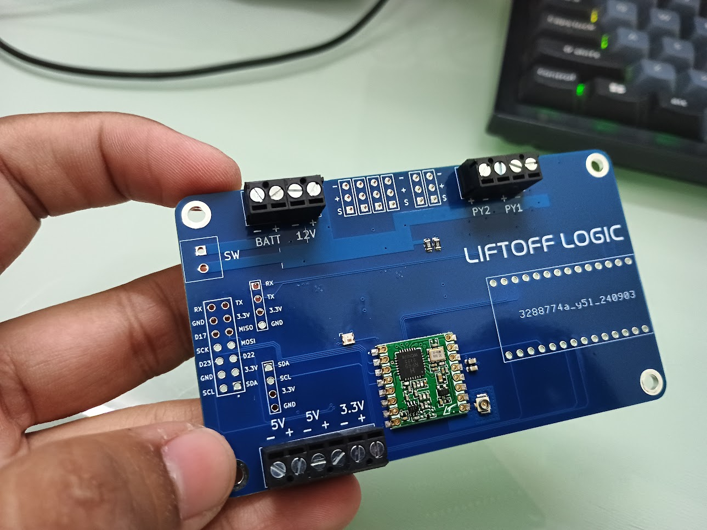
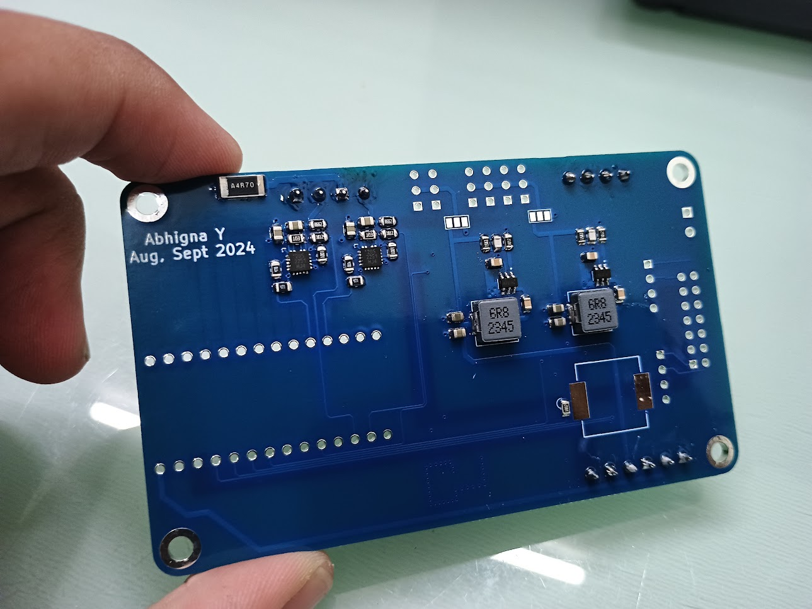
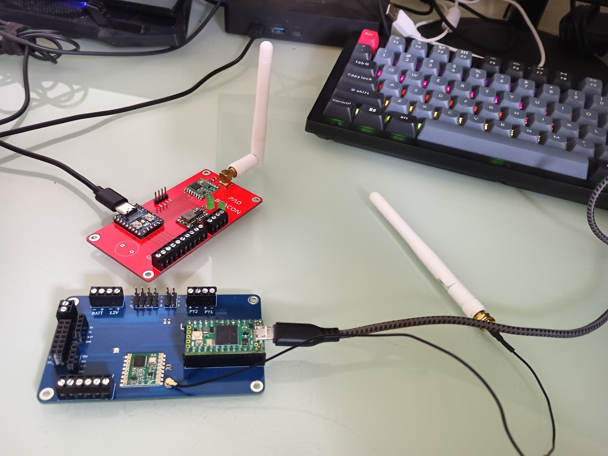
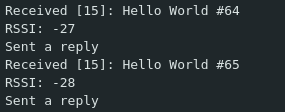
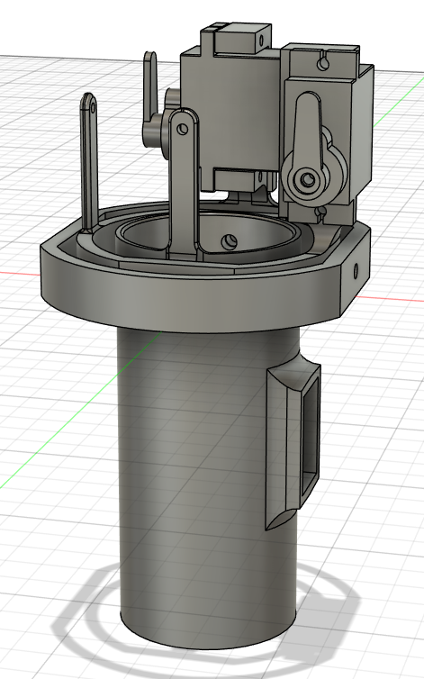
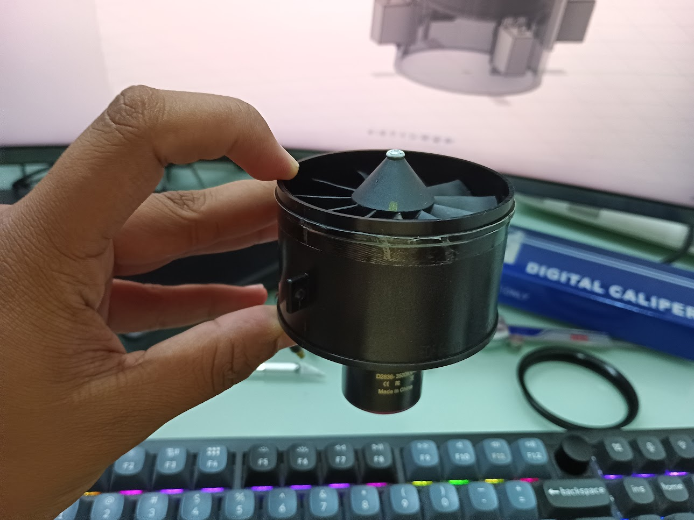

November - December 2024
Dev Log 22
Project Update - November 2024
Lots of work on the launch computers this month. First thing I did is assemble the launchpad computer (figs 1, 2). The assembly process was smooth and everything works nominally.


After both the pad computer and pad remote, it was time to test the radio communication between them (figs 3, 4). Also packets are encrypted as a treat :).


After that I wrote code to send the pad remote status to the launch pad, i.e send whether the countdown has started, has been reset, etc.
Project Update - December 2024
Not much progress was made in December. I was having some alignment problems with the compliant TVC mount, so I had to design another TVC mount. This TVC mount is similar to a half mount. The inner and outer gimbals are almost identical to the half mount I designed previously, and the motor tube is inverted so it extends down from the two gimbals (fig 5).

At around the end of this month I realized that maybe building a guided rocket in a country with no rocketry regulations is not the best idea. Rocketry in India is by itself a gray area, and adding a control system to those rockets sees like I might be close to pushing some legal boundaries Even if it's a very low chance, it's a chance I don't want to take.
I still want to build actively guided vehicles, and I really want to build something similar to Starship. So if I can't build rockets what's the next best thing? EDF powered vehicles. I want to build an EDF-powered hopper/lander vehicle that will autonomously navigate to a catch tower and land on it like the Starship Superheavy booster.
I'm planning on using a 74mm cardboard tube as the airframe for this vehicle, so I got a 66mm 3-4s EDF for the project (fig 6). Started the basic CAD for this vehicle, should have more done next month.
